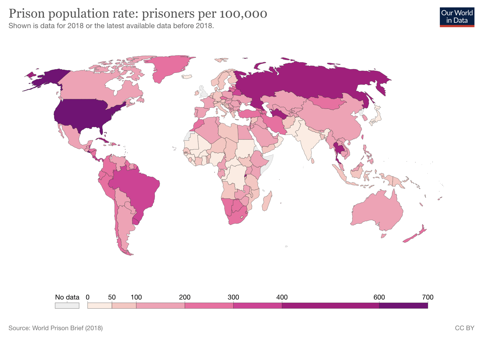
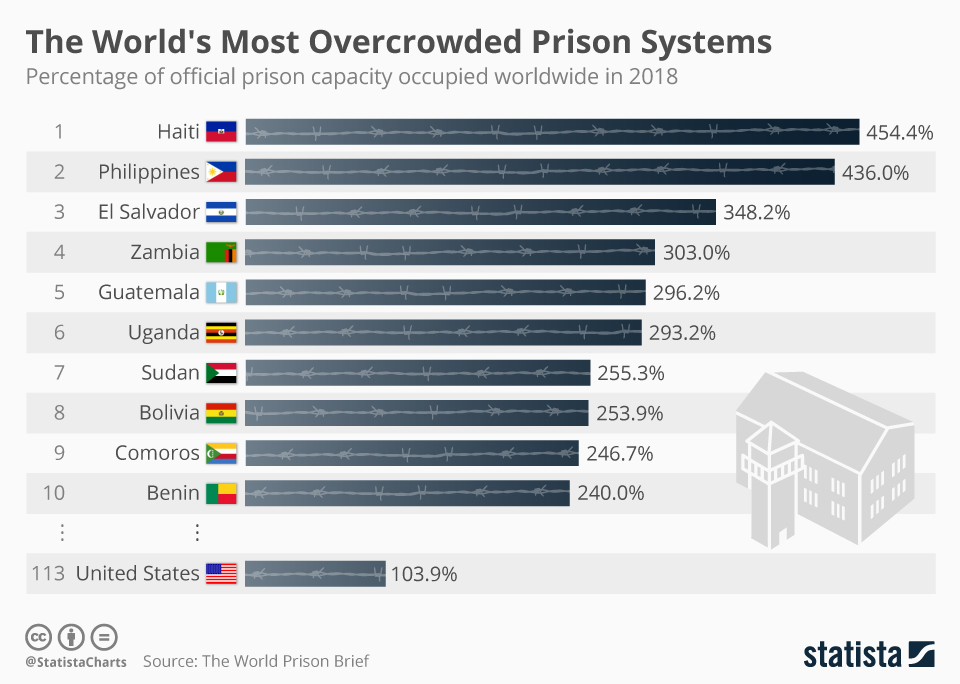
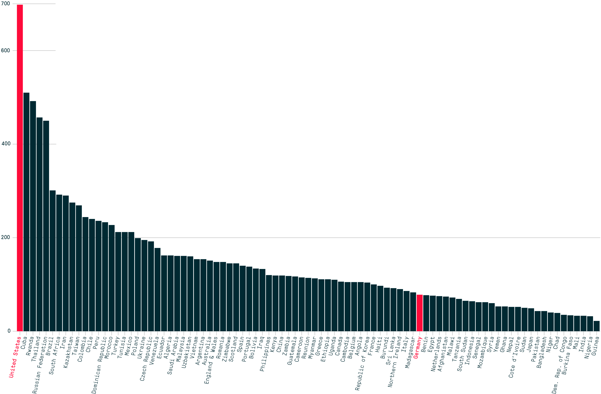

Home
Main Page
Graphs and Charts
Visual aids!

World map of prison population rates from World Prison Brief

Data from World Prison Brief, chart from Statista

Incarceration rates per 100,000 from The Marshall Project